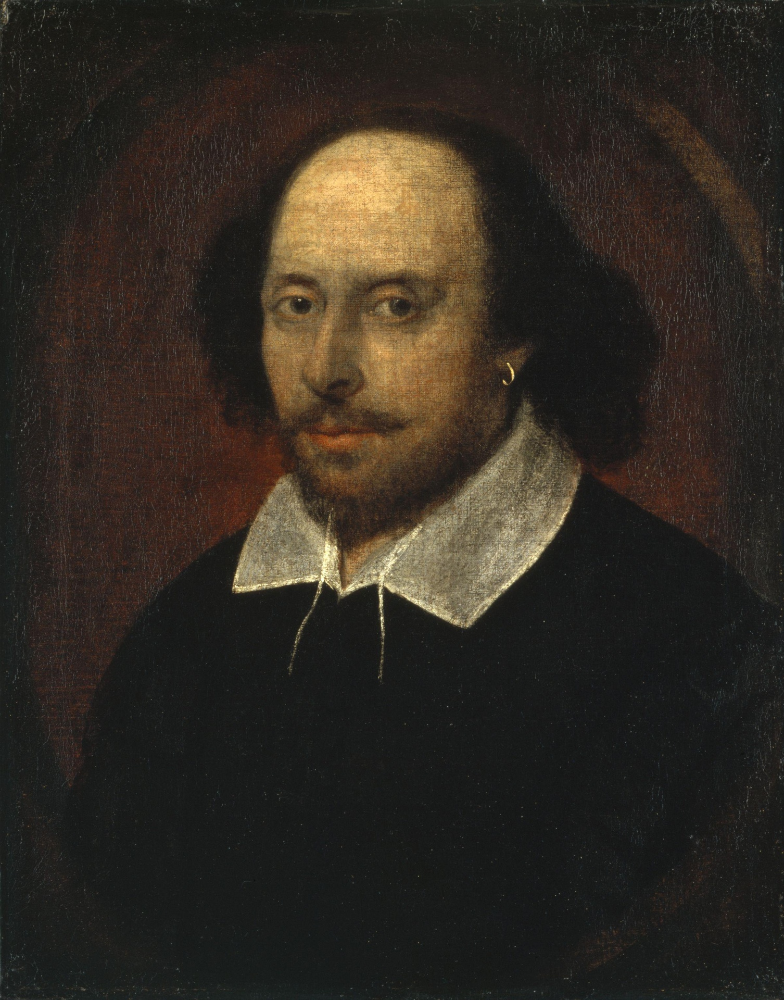

William Shakespeare,
wrote at least 37 plays and collaborated on several more
"one of the greatest writers in the English language "
"J.K. Rowling, whose full name is Joanne Rowling, is a British author best known for writing the immensely popular Harry Potter series. She was born on July 31, 1965, in Yate, Gloucestershire, England. Rowling's interest in writing began at a young age, and she wrote stories throughout her life."
"J.K. Rowling, whose full name is Joanne Rowling, is a British author best known for writing the immensely popular Harry Potter series. She was born on July 31, 1965, in Yate, Gloucestershire, England. Rowling's interest in writing began at a young age, and she wrote stories throughout her life."

"Charles Dickens was a renowned English writer and social critic of the 19th century. He was born on February 7, 1812, in Portsmouth, England, and died on June 9, 1870. Dickens is widely regarded as one of the greatest novelists in the English language and a literary icon."
"MarkTwain is the pen name of Samuel Langhorne Clemens, an American writer and humorist. He was born on November 30, 1835, in Florida, Missouri, and died on April 21, 1910, in Redding, Connecticut. Twain is best known for his novels "The Adventures of Tom Sawyer" and "Adventures of Huckleberry Finn," which are considered classics of American literature"

"MarkTwain is the pen name of Samuel Langhorne Clemens, an American writer and humorist. He was born on November 30, 1835, in Florida, Missouri, and died on April 21, 1910, in Redding, Connecticut. Twain is best known for his novels "The Adventures of Tom Sawyer" and "Adventures of Huckleberry Finn," which are considered classics of American literature"
"Rumi, also known as Jalāl ad-Dīn Muhammad Rūmī, was a 13th-century Persian poet, Islamic jurist, and theologian. He is widely recognized as one of the greatest spiritual masters and literary figures in the history of Persian literature. Rumi's works have transcended time and cultural boundaries, and he continues to be celebrated and studied around the world."
"Rumi, also known as Jalāl ad-Dīn Muhammad Rūmī, was a 13th-century Persian poet, Islamic jurist, and theologian. He is widely recognized as one of the greatest spiritual masters and literary figures in the history of Persian literature. Rumi's works have transcended time and cultural boundaries, and he continues to be celebrated and studied around the world."

"Pablo Neruda, born Ricardo Eliécer Neftalí Reyes Basoalto (July 12, 1904 - September 23, 1973), was a renowned Chilean poet and diplomat. He is widely regarded as one of the greatest poets of the 20th century and a prominent figure in Latin American literature."
"Rabindranath Tagore was a prominent Bengali poet, philosopher, musician, and polymath who lived from 1861 to 1941. He is best known for his contributions to literature and is often referred to as the "Bard of Bengal" or "the poet of poets." Tagore's works span various genres, including poetry, songs, short stories, novels, plays, and essays."
Made By Krishna Agarwal
Class - 11E